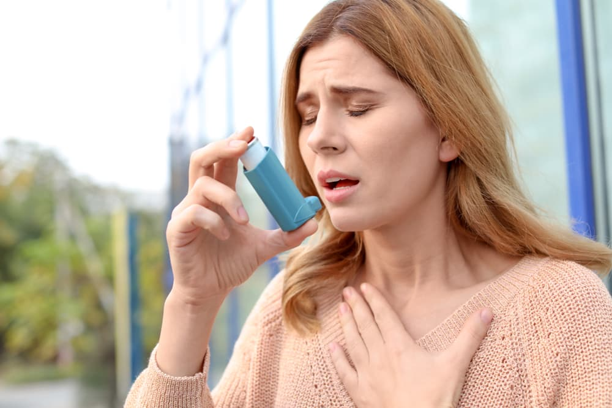

Asthma
Non-Harmfull and can be cured using home remedies
Asthma is a long-term inflammatory disease of the airways of the lungs.It is
characterized by variable and recurring symptoms, reversible airflow obstruction, and easily
triggered bronchospasms.Symptoms include episodes of wheezing, coughing, chest tightness,
and shortness of breath.These may occur a few times a day or a few times per week.Depending
on the person, asthma symptoms may become worse at night or with exercise.
Asthma is thought to be caused by a combination of genetic and environmental factors.
Environmental factors include exposure to air pollution and allergens.Other potential triggers
include medications such as aspirin and beta blockers.Diagnosis is usually based on the pattern
of symptoms, response to therapy over time, and spirometry lung function testing.Asthma is
classified according to the frequency of symptoms, forced expiratory volume in one second (FEV1),
and peak expiratory flow rate.It may also be classified as atopic or non-atopic, where atopy
refers to a predisposition toward developing a type 1 hypersensitivity reaction.
There is no known cure for asthma, but it can be controlled. Symptoms can be prevented by
avoiding triggers, such as allergens and respiratory irritants, and suppressed with the use of
inhaled corticosteroids.Long-acting beta agonists (LABA) or antileukotriene agents may be
used in addition to inhaled corticosteroids if asthma symptoms remain uncontrolled.
Treatment of rapidly worsening symptoms is usually with an inhaled short-acting beta2 agonist such
as salbutamol and corticosteroids taken by mouth.In very severe cases, intravenous
corticosteroids, magnesium sulfate, and hospitalization may be required.
In 2019 asthma affected approximately 262 million people and caused approximately 461,000 deaths.
Most of the deaths occurred in the developing world.Asthma often begins in childhood,and the
rates have increased significantly since the 1960s.Asthma was recognized as early as Ancient
Egypt
👉symptoms
 Shortness of breath
Chest tightness or pain
Wheezing when exhaling, which is a common sign of asthma in children
Trouble sleeping caused by shortness of breath, coughing or wheezing
Coughing or wheezing attacks that are worsened by a respiratory virus, such as a cold or the flu
Shortness of breath
Chest tightness or pain
Wheezing when exhaling, which is a common sign of asthma in children
Trouble sleeping caused by shortness of breath, coughing or wheezing
Coughing or wheezing attacks that are worsened by a respiratory virus, such as a cold or the flu
👉causes
Childhood asthma causes aren't fully understood. Some factors thought to be involved include having:
A tendency to develop allergies that runs in the family.
Parents with asthma.
Some types of airway infections at a very young age.
Exposure to environmental factors, such as cigarette smoke or other air pollution.
Increased immune system sensitivity causes the lungs and airways to swell and produce mucus when exposed to certain triggers. Reaction to a trigger can be delayed, making it more difficult to identify the trigger. Triggers vary from child to child and can include:
Viral infections such as the common cold.
Exposure to air pollutants, such as tobacco smoke.
Allergies to dust mites, pet dander, pollen or mold.
Physical activity.
Weather changes or cold air.
Sometimes, asthma symptoms occur with no apparent triggers.